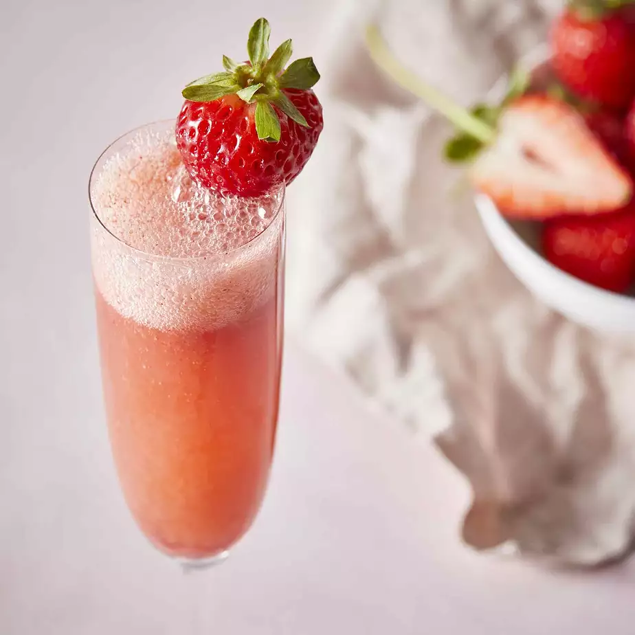

Home
Strawberry Bellini

Ingredients
- 3 cups strawberries, hulled and sliced
- ¼ cup confectioners' sugar
- 1 tablespoon brandy
- 1½ cups chilled sparkling wine
- 3 large strawberries
Steps
- Blend 3 cups strawberries, confectioners' sugar, and brandy together in a blender until smooth. Chill in refrigerator for 10 minutes.
- Divide the strawberry mixture among 3 champagne flutes; top each with about 1/2 cup sparkling wine; stir. Garnish each glass with 1 strawberry.
Nutrition Facts
Per Serving: 298 calories; protein 1.3g; carbohydrates 37.5g; fat 0.5g; sodium 13.1mg. Full Nutrition